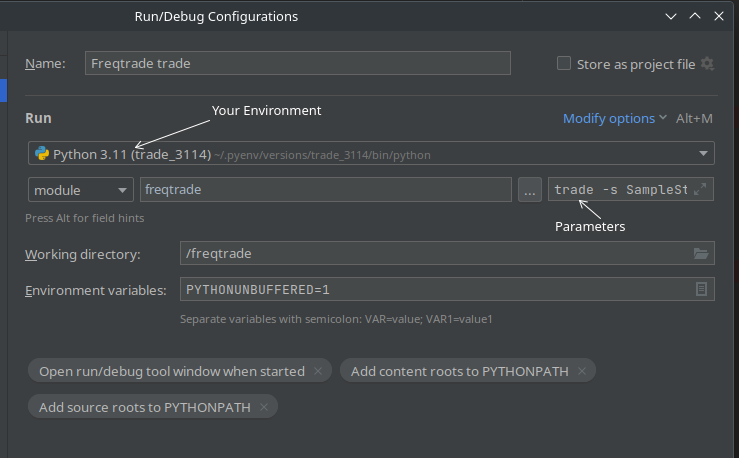

开发帮助¶
本页面面向Freqtrade的开发者、希望为Freqtrade代码库或文档贡献内容的人，或者希望了解自己运行的应用源代码的人。
欢迎所有的贡献、问题报告、漏洞修复、文档改进、功能增强和创意点子。我们在 GitHub 上跟踪问题，也在 discord 上设有开发频道，您可以在这里提问。
文档¶
文档可在 https://freqtrade.io 获取，提交每个新功能的PR时都需要提供对应的文档。
关于文档的特殊格式（如 Note 框等）可以在 这里 查找。
要在本地测试文档，可以执行以下命令：
pip install -r docs/requirements-docs.txt
mkdocs serve
这样会启动一个本地服务器（通常在端口8000），方便您查看效果。
开发者环境设置¶
要配置开发环境，您可以选择使用提供的 DevContainer，也可以运行 setup.sh 脚本，并在提示“Do you want to install dependencies for dev [y/N]?”时回答“y”。
或者，若您的系统不支持 setup.sh 脚本，可以手动安装：运行 pip3 install -r requirements-dev.txt，之后再运行 pip3 install -e .[all]。
此操作会安装所有开发所需工具，包括 pytest、ruff、mypy 和 coveralls。
然后，执行 pre-commit install 安装git钩子脚本，在提交前自动校验修改内容。这可以避免在CI中重复等待，因为一些基本的格式化检查会在本地完成。
在提交PR之前，请熟悉我们的 贡献指南。
Devcontainer 设置¶
最便捷的入门方式是使用 VSCode 和远程容器扩展（Remote container extension）。
这样开发者可以在不安装任何Freqtrade特定依赖到本地机器的情况下启动机器人。
Devcontainer 依赖¶
详细信息建议直接参考 Remote container扩展的官方文档。
测试¶
新代码应包含基础的单元测试。根据功能复杂度，评审者可能会要求补充更深入的单元测试。
如有需要，Freqtrade团队可以协助编写高质量的测试（但请不要期望有人为你写测试代码）。
运行测试的方法¶
在仓库根目录运行 pytest，可以测试所有用例，确保你的环境配置正确。
feature branches
预计develop和stable分支上的测试都应通过。其他分支可能仍在开发中，测试可能尚未完成。
检查日志内容¶
Freqtrade 在测试中主要使用两种方法检查日志内容：log_has() 和 log_has_re()（后者支持正则表达式，用于处理动态日志信息）。
它们在 conftest.py 中定义，可以在任何测试模块中导入。
一个示例检查如下：
from tests.conftest import log_has, log_has_re
def test_method_to_test(caplog):
method_to_test()
assert log_has("This event happened", caplog)
# 检查带有数字的动态信息
assert log_has_re(r"This dynamic event happened and produced \d+", caplog)
调试配置¶
推荐使用 VSCode（配合 Python 扩展）进行调试，配置文件位于 .vscode/launch.json。
以下是基本的示例配置（具体细节会因环境不同而变化）：
{
"name": "freqtrade trade",
"type": "debugpy",
"request": "launch",
"module": "freqtrade",
"console": "integratedTerminal",
"args": [
"trade",
// 可选参数：
// "--userdir", "user_data",
"--strategy",
"MyAwesomeStrategy"
]
}
你可以在 "args" 数组中添加命令行参数。
此方法还能用来调试策略：在策略代码中设置断点。
PyCharm 也可以采用类似设置，只需用 freqtrade 作为模块名，并在“参数”中配置命令行参数。
正确使用虚拟环境
使用虚拟环境（这是推荐做法）时，确保编辑器使用正确的虚拟环境，避免出现“未知导入”等问题。
VSCode¶
你可以通过“Python：选择解释器”选择正确环境，扩展会检测到已识别的环境。如果没有检测到，可手动指定路径。
Pycharm¶
在“运行/调试配置”窗口中选择合适的环境。

启动目录
假设仓库已检出，编辑器在仓库根目录启动（即 pyproject.toml 位于根目录），否则调试配置可能无效。
错误处理¶
所有 Freqtrade 异常都继承自 FreqtradeException。
但此父类不应直接使用，实际使用时应选择具体的子异常类。
以下是异常继承层次的概述：
+ FreqtradeException
|
+---+ OperationalException
| |
| +---+ ConfigurationError
|
+---+ DependencyException
| |
| +---+ PricingError
| |
| +---+ ExchangeError
| |
| +---+ TemporaryError
| |
| +---+ DDosProtection
| |
| +---+ InvalidOrderException
| |
| +---+ RetryableOrderError
| |
| +---+ InsufficientFundsError
|
+---+ StrategyError
插件¶
交易对列表（Pairlists）¶
如果您对新的交易对选择算法有想法，欢迎尝试开发！
当然，也希望能将您的算法贡献到上游。
无论动机为何——以下步骤能帮您快速上手开发新的Pairlist Handler。
首先，参考 VolumePairList，复制此文件，给你的新Pairlist Handler起个新名字。
这是一个简单的Handler，作为开发示例非常合适。
然后，修改这个Handler的类名（建议和模块文件名保持一致）。
基础类提供了交易所实例 (self._exchange)、交易对列表管理器 (self._pairlistmanager)、主配置 (self._config)、特定的交易对列表配置 (self._pairlistconfig) 以及在列表中的绝对位置 (self._pairlist_pos)：
self._exchange = exchange
self._pairlistmanager = pairlistmanager
self._config = config
self._pairlistconfig = pairlistconfig
self._pairlist_pos = pairlist_pos
提示
不要忘了在 constants.py 中注册你的交易对列表，在变量 AVAILABLE_PAIRLISTS 下，否则它不会被选择。
接下来，按照以下要求实现相关方法：
交易对列表配置¶
链式交易对列表的配置在机器人配置文件中的 "pairlists" 字段内，此字段是一个配置参数数组，定义链中每个交易对列表Handler。
一般而言，“number_assets”用于指定保留在交易对列表中的最大交易对数。请遵循此规范以确保一致的用户体验。
还可以根据需要添加其他参数。例如，VolumePairList 使用 "sort_key" 指定排序依据，但也可以根据你的算法定义任何适用的参数。
short_desc¶
返回用于Telegram消息的描述信息。
应包含交易对列表Handler的名称，以及一句简短描述（资产数量），格式为 "PairlistName - top/bottom X pairs"。
gen_pairlist¶
如果此Handler可以作为链条中的第一个交易对列表，定义初始的交易对列表（由所有后续Handler处理），请重写此方法。示例：StaticPairList 和 VolumePairList。
此方法在机器人每次执行时调用（仅当此Handler位于第一个位置），建议考虑实现缓存，避免重复复杂的计算/网络请求。
此方法应返回生成的交易对列表（后续的Handler会继续处理）。
验证步骤为可选，父类提供 verify_blacklist(pairlist) 和 _whitelist_for_active_markets(pairlist) 来进行默认过滤。
若你限制结果的交易对数量，确保最终的列表不短于预期。
filter_pairlist¶
此方法在链中的每个交易对列表Handler中由对列表管理器调用。
同样每次执行时调用——建议使用缓存减少重复计算。
它会接收交易对列表（可能是前一阶段生成的列表）和 tickers（提前获取的市场行情字典，来自 get_tickers()）。
父类默认实现会对每个交易对调用 _validate_pair()，你可以重写此方法来自定义过滤逻辑。所以你应在你的Handler中实现 _validate_pair() 或重写 filter_pairlist()。
如果重写，必须返回筛选后的交易对列表，供下一个Handler使用。
同样可以调用父类的 verify_blacklist() 和 _whitelist_for_active_markets() 进行默认过滤。
确保结果符合预期长度。
在 VolumePairList 中，这个方法还会实现不同的排序策略、提前验证确保返回数量符合预期。
示例¶
def filter_pairlist(self, pairlist: list[str], tickers: dict) -> List[str]:
# 生成动态白名单
pairs = self._calculate_pairlist(pairlist, tickers)
return pairs
保护措施（Protections）¶
建议阅读 Protection 文档，了解保护机制。
本指南面向希望开发新保护的开发者。
没有任何保护应直接使用 datetime，而应使用提供的 date_now 变量进行日期计算，保证保护措施可回测。
开发新保护
最佳实践是复制已有的保护方案作为示例。
实现新保护¶
所有保护类必须继承自 IProtection。
必须实现以下方法：
short_desc()global_stop()stop_per_pair()
global_stop() 和 stop_per_pair() 必须返回 ProtectionReturn 对象，其内容包括：
- lock_pair（布尔值）——是否锁定交易对
- lock_until（datetime）——锁定截止时间（会被四舍五入到下一根新蜡烛）
- reason（字符串）——日志与数据库存储用途
- lock_side（长、短或'*'）——锁定的方向
until 时间段应通过调用提供的 calculate_lock_end() 方法进行计算。
所有保护措施应使用 "stop_duration" / "stop_duration_candles" 来定义锁定时间（可以是秒、蜡烛数等），内容在保护类中作为 self._stop_duration 提供。
如果需要考虑回溯期，请使用 "lookback_period" / "lockback_period_candles" 来同步所有保护逻辑。
全局与局部停止（Global vs. Local Stops）¶
保护机制可以选择两种方式停止交易：
- 针对单个交易对（局部）
- 针对所有交易对（全局）
针对单个交易对的保护（Per pair）¶
实现局部停止的保护类必须设置 has_local_stop=True。
stop_per_pair() 在每次交易结束（退出订单完成）时调用。
全局保护（Global Protection）¶
此类保护会在所有交易对上进行评估，影响所有交易对的交易（“全局交易锁”）。
要实现全局停止，必须设置 has_global_stop=True。
global_stop() 在每次交易结束后调用。
计算锁定结束时间¶
保护措施应基于最近一次交易，计算锁定截止时间，以避免重复锁定。
calculate_lock_end() 方法提供了辅助。
实现新的交易所（WIP）¶
注意
本部分仍在开发中，不是完整指南，不能保证所有步骤已涵盖。
注意
在运行任何测试前，请确保已使用最新版本的 CCXT (pip install -U ccxt)。
大部分由 CCXT 支持的交易所可以直接使用。
快速测试交易所公开接口的方法：在 tests/exchange_online/conftest.py 添加配置，然后用以下命令运行：
pytest --longrun tests/exchange_online/test_ccxt_compat.py
成功通过这些测试是基础（这是必要条件），但并不保证交易所所有功能都正常，因为这里只测试公共接口，私有接口（如下单、资金查询）还需额外验证。
建议使用 freqtrade download-data 下载较长时间段的数据（如数月），确认下载无误（无空洞，时间范围正确）。
以下操作是将交易所列入“支持”或“社区测试”列表的前提。
一些“扩展”步骤能让交易所更完善（功能更全），但不是必要条件。
附加建议/步骤：
- 验证
fetch_ohlcv()返回数据，必要时调整ohlcv_candle_limit - 检查L2订单深度API的限制范围（API文档）
- 检查余额是否正确显示（需要API密钥）
- 测试市价单（需要API密钥）
- 测试限价单（需要API密钥）
- 测试订单取消（需要API密钥）
- 完整的交易流程（开仓+平仓）（需要API密钥）
- 比较交易所与机器人结果
- 校验手续费是否正确应用（与API端点对比）
*** 注意：需要API密钥和资金账户在对应交易所***
支持止损（Stoploss）/在交易所订单¶
确认新交易所是否支持在API中设置Stoploss订单。
因CCXT尚未统一支持“在交易所订单设置止损”，需要自行实现相关参数。
建议参考 binance.py 中的实现示例。
需详细阅读交易所API的文档，了解具体实现方式。
CCXT Issues 可能提供帮助，尤其是其他项目已实现类似功能的案例。
不完整的蜡烛（Incomplete candles）¶
在获取K线（OHLCV）数据时，可能会得到未完整的蜡烛（取决于交易所）。
此处以每日蜡烛 ("1d") 为例，以简化操作。
查询示例：
import ccxt
from datetime import datetime, timezone
from freqtrade.data.converter import ohlcv_to_dataframe
ct = ccxt.binance() # 替换为测试的交易所
timeframe = "1d"
pair = "BTC/USDT" # 确保该交易对在交易所存在
raw = ct.fetch_ohlcv(pair, timeframe=timeframe)
# 转DataFrame
df1 = ohlcv_to_dataframe(raw, timeframe, pair=pair, drop_incomplete=False)
print(df1.tail(1))
print(datetime.now(timezone.utc))
输出示例：
date open high low close volume
499 2019-06-08 00:00:00+00:00 0.000007 0.000007 0.000007 0.000007 26264344.0
2019-06-09 12:30:27.873327
最后一行显示的是交易所的最新数据，后一行是当前UTC时间。
如果日期相同，说明最后一个蜡烛可能未完整，应删除（保持"ohlcv_partial_candle"为True）；
否则，将参数设为False，不删除蜡烛（如上示例）。
另一种检测方法：多次运行代码，观察成交量变化情况。
更新 Binance 递归杠杆等级¶
定期更新杠杆等级信息：需要已启用期货账户。
示例代码：
import ccxt
import json
from pathlib import Path
exchange = ccxt.binance({
'apiKey': '<apikey>',
'secret': '<secret>',
'options': {'defaultType': 'swap'}
})
_ = exchange.load_markets()
lev_tiers = exchange.fetch_leverage_tiers()
# 假设在仓库的根目录运行
file = Path('freqtrade/exchange/binance_leverage_tiers.json')
json.dump(dict(sorted(lev_tiers.items())), file.open('w'), indent=2)
此文件应提交到上游，供他人使用。
更新示例笔记本¶
为了保证Jupyter笔记本与文档同步，更新示例笔记本后，应运行：
jupyter nbconvert --ClearOutputPreprocessor.enabled=True --inplace freqtrade/templates/strategy_analysis_example.ipynb
jupyter nbconvert --ClearOutputPreprocessor.enabled=True --to markdown freqtrade/templates/strategy_analysis_example.ipynb --stdout > docs/strategy_analysis_example.md
持续集成（CI）¶
部分 CI 流程设计概要：
- CI 支持所有操作系统：Ubuntu、macOS、Windows。
- 主分支（
stable）和开发分支（develop）的 Docker 镜像会定期重新构建，支持多架构。 - 包含Plot依赖的镜像采用
*_plot后缀。 - Docker 镜像会记录基于的提交（存于
/freqtrade/freqtrade_commit文件）。 - 每周定期运行完整镜像重建。
- 部署在Ubuntu上。
build_helpers目录内包括 ta-lib 二进制，避免因外部依赖引发失败。- 提交PR前，所有测试都必须通过，才能合入
stable或develop。
发布流程¶
本部分面向维护者，介绍版本发布流程。
创建发布分支¶
注意
请确保 stable 分支是最新的！
选择一个大约一周前的提交（避免包含最新提交），新建分支：
# 创建新分支
git checkout -b new_release <commitid>
确认该提交到当前分支之间没有重要修复遗漏。如果有，挑选（cherry-pick）相关提交。
然后，将stable分支合并到此分支。
编辑freqtrade/__init__.py，加入当前日期的版本号（如2019.7，表示2019年7月）。
当月如果需要二次发布，可以用2019.7.1等次版本号。
版本号必须符合 PEP440 规范。
提交此修改。
推送分支到远端仓库，并对stable分支提出PR。
在develop分支上，将版本号更新为下一版本（如2019.8-dev）。
生成变更记录（Changelog）¶
PR合并前执行：
git log --oneline --no-decorate --no-merges stable..new_release
建议用折叠符号包裹完整变更日志：
<details>
<summary>展开完整变更日志</summary>
... 全部git提交信息
</details>
发布FreqUI¶
若FreqUI有重要更新，应在合入发布分支前先创建FreqUI的发布版本。
确保FreqUI的CI任务已完成且通过，再合入版本。
创建GitHub发布（Tag）¶
在PR合入后（推荐在合入的同时或稍后）：
- 进入GitHub，点击“Draft a new release”
- 使用标签（Tag）指定版本号
- 以“stable”作为基础
- 将变更记录粘贴为说明（支持Markdown）
- 参考以下示例：
??? 提示 “发布模板”
## 高亮变更
- ...
### 如何更新
一如既往，您可以使用以下任一命令更新您的机器人：
#### docker-compose
```bash
docker-compose pull
docker-compose up -d
```
#### 通过安装脚本进行安装
```
# 退出虚拟环境并运行
./setup.sh --update
```
#### 纯本机安装
```
git pull
pip install -U -r requirements.txt
```
<details>
<summary>展开完整变更日志</summary>
```
<在此粘贴您的变更日志>
```
</details>
版本发布¶
pypi¶
!!! 警告 “手动发布” 这是自动化流程的一部分，不需要人工操作。
??? 示例 “手动发布”
若需手动上传到PyPI，可执行以下步骤（前提是已安装wheel和twine，且在PyPI帐户拥有权限）：
pip install -U build
python -m build --sdist --wheel
# PyPI测试环境（验证发布效果）
twine upload --repository-url https://test.pypi.org/legacy/ dist/*
# 正式环境
twine upload dist/*
请勿将非正式版本推送到正式PyPI，以免引发发布问题。